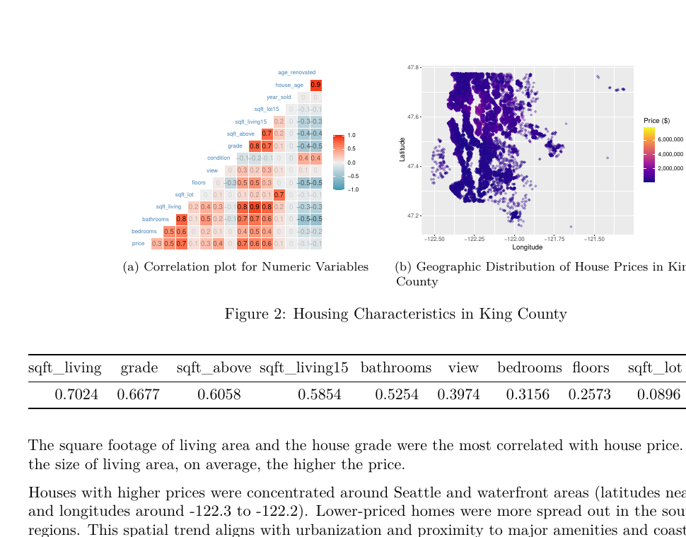
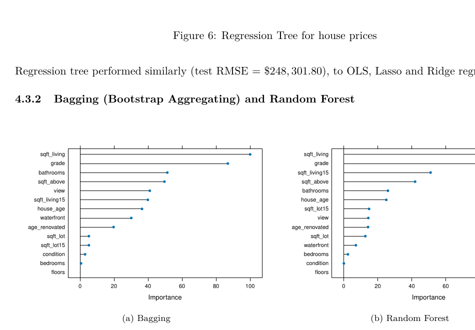
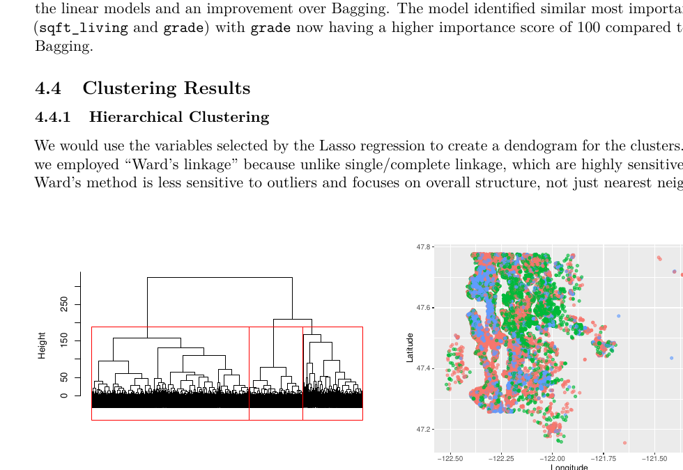
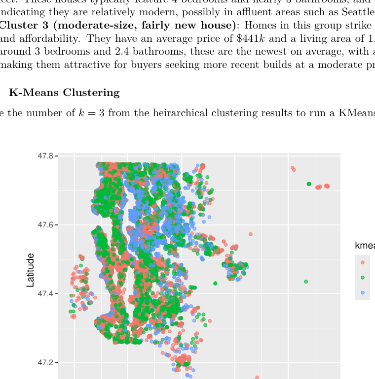
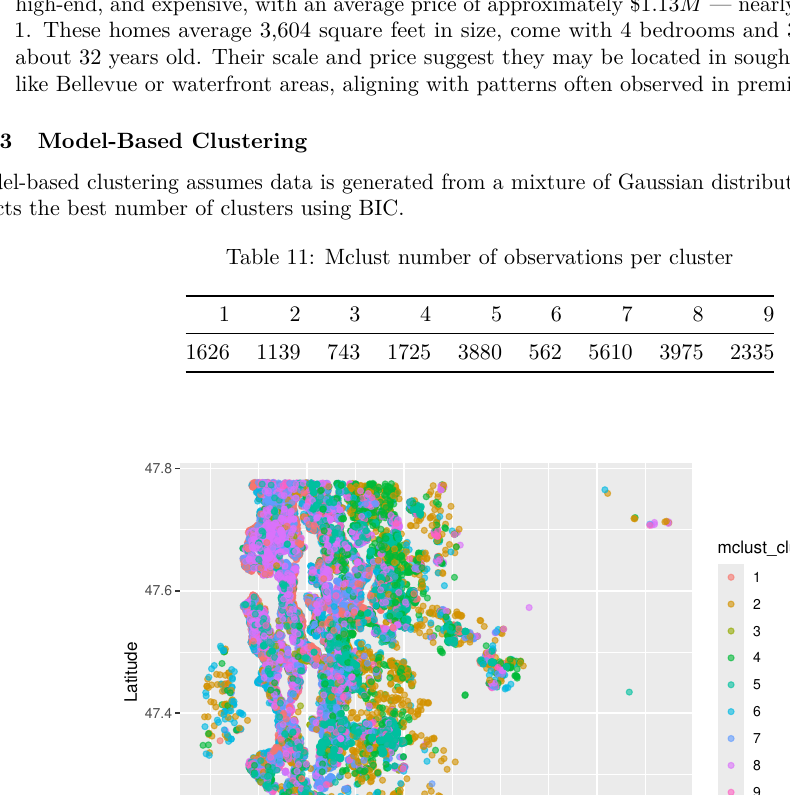

Clean & Prepare
Validated dates, recoded waterfront status, engineered age-related variables, removed implausible records, and reduced multicollinearity.
An end-to-end data mining analysis of 21,613 residential property sales in King County, Washington, combining predictive modeling and clustering to understand what drives home values and how the market separates into distinct segments.
Project Overview
The goal was to identify the structural, locational, and historical features most associated with house prices, compare multiple predictive methods, and uncover naturally occurring housing-market segments.
The analysis included multiple linear regression, stepwise selection, LASSO, Ridge, K-nearest neighbors, regression trees, bagging, Random Forest, hierarchical clustering, K-means, and model-based clustering.
Workflow
Validated dates, recoded waterfront status, engineered age-related variables, removed implausible records, and reduced multicollinearity.
Examined distributions, correlations, geographic patterns, and relationships between price and core housing characteristics.
Compared linear, regularized, nearest-neighbor, tree-based, and ensemble methods using test RMSE.
Used hierarchical, K-means, and model-based clustering to identify distinct groups of homes and submarkets.
Exploratory Analysis
Living area and property grade emerged as the strongest correlates of price. Higher-value homes were concentrated around Seattle and waterfront areas, while waterfront homes carried a visible price premium.

Model Comparison
Lower RMSE is better. Random Forest reduced test error substantially relative to the linear models, while KNN performed poorly in the high-dimensional feature space.
$184,928
Test RMSE
Feature-importance analysis consistently highlighted living area and grade among the most influential predictors.

Market Segmentation
Hierarchical and K-means clustering produced three broad housing groups, while model-based clustering identified nine more granular segments differentiated by price, size, layout, and age.
About $406K average price, 1,552 sq. ft., and roughly 62 years old in the K-means solution.
About $497K average price, 2,218 sq. ft., and roughly 22 years old.
About $1.13M average price, 3,604 sq. ft., 4 bedrooms, and 3 bathrooms.



Key Findings
Living area and grade were consistently important. Both appeared among the strongest price drivers across exploratory and ensemble analyses.
Nonlinear modeling improved prediction. Random Forest achieved the lowest test RMSE of the evaluated approaches.
Location mattered. Higher prices were concentrated around Seattle and waterfront areas.
The market was not homogeneous. Clustering uncovered groups ranging from compact older homes to large premium properties.
Limitations & Next Steps
The dataset covers a fixed historical sales period and does not include potentially important external factors such as school quality and neighborhood amenities. Some modeling approaches also carry computational or statistical assumptions that may limit performance.
Future work could extend the project with time-series forecasting, spatial modeling, richer feature engineering, and external datasets such as school ratings or proximity to public transportation.
Full Analysis
The complete report contains methodology, equations, diagnostics, model outputs, cluster profiles, limitations, and supplementary R output.
Open Full PDF Report